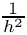
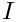
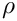
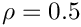

This file first gives an example of how to create an Epetra_CrsMatrix object, then it details the supported matrices and gives a list of required parameters.
Given an already created Epetra_Map, Galeri can construct an Epetra_CrsMatrix object that has this Map as RowMatrixRowMap(). A simple example is as follows. Let Map be an already created Epetra_Map* object; then, a diagonal matrix with on the diagonal can be created using the instructions
For matrices arising from 2D discretizations on Cartesian grids, it is possible to visualize the computational stencil at a given grid point by using function PrintStencil2D, defined in the Galeri namespace:
#include "Galeri_Utils.h"
using namespace Galeri;
...
// Matrix is an already created Epetra_CrsMatrix* object
// and nx and ny the number of nodes along the X-axis and Y-axis,
// respectively.
PrintStencil2D(Matrix, nx, ny);
To present the list of supported matrices we adopt the following symbols:
MATLAB: please refer to the MATLAB documentation for more details on the properties of this matrix;
DENSE: the matrix is dense (but still stored as Epetra_CrsMatrix);
MAP: the number of elements and its distribution are determined from the input map;
MAP2D: the input map has been created by CreateMap(), using MapType = Cartesian2D. The values of nx and ny are still available in the input list;
MAP3D: the input map has been created by CreateMap(), using MapType = Cartesian3D. The values of nx, ny and nz are still available in the input list;
SER: the matrix can be obtained in serial environments only;
PAR: the matrix can be obtained in parallel (and serial) environments.
The symbol indicates the matrix of the element in MATLAB notation (that is, starting from 1).
The list of supported matrices is now reported in alphabetical order.
BentPipe2D (MAP2D, PAR): Returns a matrix corresponding to the finite-difference discretization of the problem
on the unit square, with homogeneous Dirichlet boundary conditions. A standard 5-pt stencil is used to discretize the diffusive term, and a simple upwind stencil is used for the convective term. Here,
The value of can be specified using diff, and that of using conv. The default values are diff=1e-5, conv=1.
BigCross2D (MAP2D, PAR): Creates a matrix corresponding to the following stencil:
The default values are those given by Laplace2DFourthOrder. A non-default value must be set in the input parameter list before creating the matrix. For example, to specify the value of , one should do
BigStar2D (MAP2D, PAR): Creates a matrix corresponding to the stencil
The default values are those given by Biharmonic2D.
Biharmonic2D (MAP2D, PAR): Creates a matrix corresponding to the discrete biharmonic operator,
The formula does not include the scaling.
Cauchy (MAP, MATLAB, DENSE, PAR): Creates a particular instance of a Cauchy matrix with elements . Explicit formulas are known for the inverse and determinant of a Cauchy matrix. For this particular Cauchy matrix, the determinant is nonzero and the matrix is totally positive.
Cross2D (MAP2D, PAR): Creates a matrix with the same stencil of Laplace2D}, but with arbitrary values. The computational stencil is
The factor  can be considered by scaling the input parameters.
Cross3D (MAP3D, PAR): Similar to the Cross2D case. The matrix stencil correspond to that of a 3D Laplace operator on a structured 3D grid. On a given x-y plane, the stencil is as in Laplace2D. The value on the plane below is set using f, the value on the plane above with g.
Diag (MAP, PAR): Creates , where  is the identity matrix of size n. The default value is
List.set("a", 1.0);
Fiedler (MAP, MATLAB, DENSE, PAR): Creates a matrix whose element are . The matrix is symmetric, and has a dominant positive eigenvalue, and all the other eigenvalues are negative.
Hanowa (MAP, MATLAB, PAR): Creates a matrix whose eigenvalues lie on a vertical line in the complex plane. The matrix has the 2x2 block structure (in MATLAB's notation)
The complex eigenvalues are of the form a and , for . The default value is
List.set("a", -1.0);
Hilbert (MAP, MATLAB, DENSE, PAR): This is a famous example of a badly conditioned matrix. The elements are defined in MATLAB notation as .
JordanBlock (MAP, MATLAB, PAR): Creates a Jordan block with eigenvalue lambda. The default value is lambda=0.1;
KMS (MAP, MATLAB, DENSE, PAR): Create the Kac-Murdock-Szego Toepliz matrix such that (for real  only). Default value is , or can be using rho. The inverse of this matrix is tridiagonal, and the matrix is positive definite if and only if . The default value is rho=-0.5;
Laplace1D (MAP, PAR): Creates the classical tridiagonal matrix with stencil .
Laplace1DNeumann (MAP, PAR): As for Laplace1D, but with Neumann boundary conditioners. The matrix is singular.
Laplace2D (MAP2D, PAR): Creates a matrix corresponding to the stencil of a 2D Laplacian operator on a structured Cartesian grid. The matrix stencil is:
The formula does not include the scaling.
Laplace2DFourthOrder (MAP2D, PAR): Creates a matrix corresponding to the stencil of a 2D Laplacian operator on a structured Cartesian grid. The matrix stencil is:
The formula does not include the scaling.
Laplace3D (MAP3D, PAR): Creates a matrix corresponding to the stencil of a 3D Laplacian operator on a structured Cartesian grid.
Lehmer (MAP, MATLAB, DENSE, PAR): Returns a symmetric positive definite matrix, such that
This matrix has three properties: is totally nonnegative, the inverse is tridiagonal and explicitly known, The condition number is bounded as
Minij (MAP, MATLAB, DENSE, PAR): Returns the symmetric positive definite matrix defined as .
Ones (MAP, PAR): Returns a matrix with . The default value is a=1;
Parter (MAP, MATLAB, DENSE, PAR): Creates a matrix . This matrix is a Cauchy and a Toepliz matrix. Most of the singular values of A are very close to .
Pei (MAP, MATLAB, DENSE, PAR): Creates the matrix
This matrix is singular for or . The default value for is 1.0.
Recirc2D (MAP2D, PAR): Returns a matrix corresponding to the finite-difference discretization of the problem
on the unit square, with homogeneous Dirichlet boundary conditions. A standard 5-pt stencil is used to discretize the diffusive term, and a simple upwind stencil is used for the convective term. Here,
The value of can be specified using diff, and that of using conv. The default values are diff=1e-5, conv=1.
Ris (MAP, MATLAB, PAR): Returns a symmetric Hankel matrix with elements , where is problem size. The eigenvalues of A cluster around and .
Star2D (MAP2D, PAR): Creates a matrix with the 9-point stencil:
UniFlow2D (MAP2D, PAR): Returns a matrix corresponding to the finite-difference discretization of the problem
on the unit square, with homogeneous Dirichlet boundary conditions. A standard 5-pt stencil is used to discretize the diffusive term, and a simple upwind stencil is used for the convective term. Here,
that corresponds to an unidirectional 2D flow. The default values are


![\[
- \epsilon \Delta u + (v_x,v_y) \cdot \nabla u = f
\]](form_53.png)


![\[
- \epsilon \Delta u + (v_x,v_y) \cdot \nabla u = f
\]](form_53_dark.png)